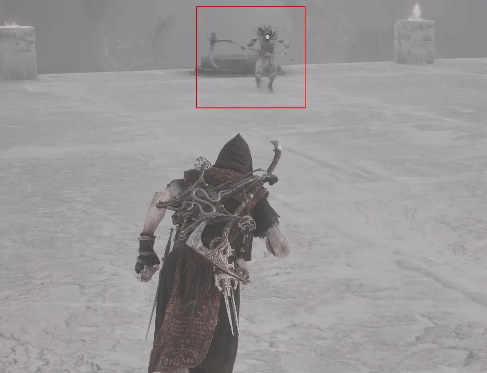
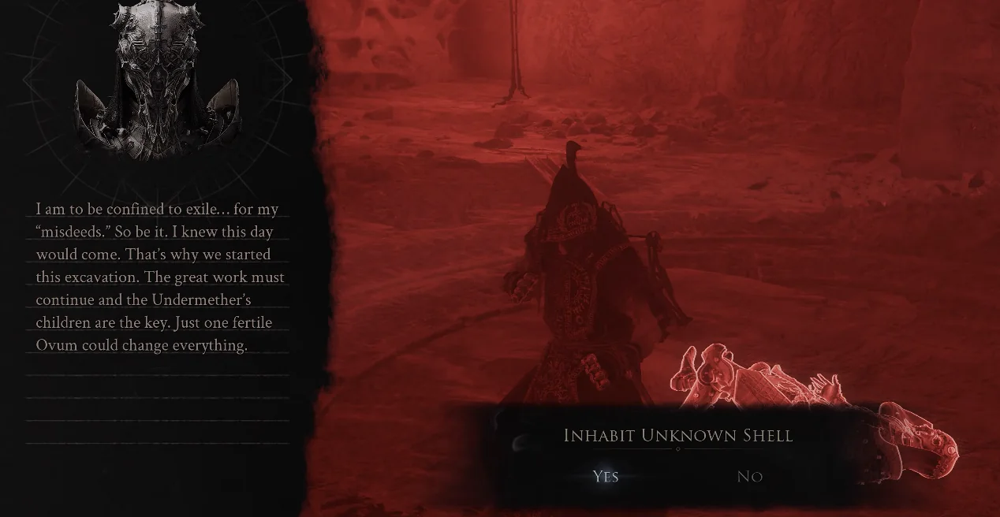

Follow this captured route from The Silent Steps Beacon to obtain Clockwork Scythe.
Region
Mammon
Starting point
The Silent Steps Beacon
Base damage
42
Route 01Travel to The Silent Steps Beacon.Route 02Use the portal, move forward and turn left onto the marked platform.

Route 03Defeat Sariel in the first encounter.Route 04Follow the smoke trail to the stone door after the first victory; it opens automatically.Route 05Continue to the end of the route and enter the Chamber of Becoming. Approach enemies can be bypassed if you only want this weapon.Route 06Continue through Sariel's encounters to the final chamber.Route 07Break all four corner obelisks in the final room, otherwise Sariel continues to revive.Route 08Defeat Sariel after the obelisks are destroyed.

Route 09Receive the Clockwork Scythe after the final victory.